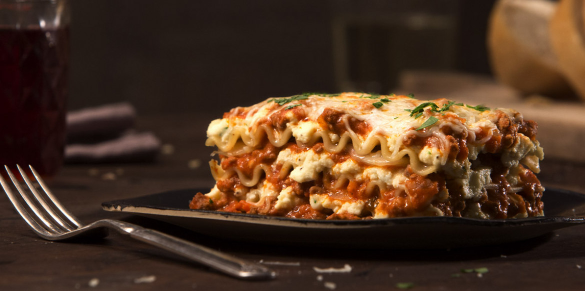

Lasagna recipe
Disclaimer: for this recipe you will need the bolognese sauce recipe

Using the bolognese sauce recipe, and a few more steps we will make my boyfriends fav dish, lasagna
this easy recipe using the bolognese recipe of this site is delicious and one of my boyfriends favorites
Ingredients:
- 2 beaten eggs
- 2 cups of ricotta cheese
- 2 cups of shredded cheese
- 1 Tbsp of parsley
- 1 Tbsp of pepper
- 6 no-boil pasta noodles
Steps:
- In a medium bowl, stir together egg, ricotta, 1/2 cup 6 Cheese Italian, parsley and pepper.
- Spoon 1/2 cup meat sauce onto bottom of 11 x 7-inch baking dish or pan.
Layer 2 noodles, one third of the Ricotta cheese mixture, 1/3 remaining meat sauce and 1/2 cup 6 Cheese Italian Cheese.
Repeat layering 2 more times with noodles, Ricotta mix, meat sauce and 6 Cheese Italian Cheese.
- Cover with foil. Bake in preheated 375°F oven 40 minutes.
Uncover and continue baking 10 minutes or until bubbly.
Let stand 5 minutes before serving. Sprinkle with additional chopped parsley for garnish if desired.
Serve and enjoy.